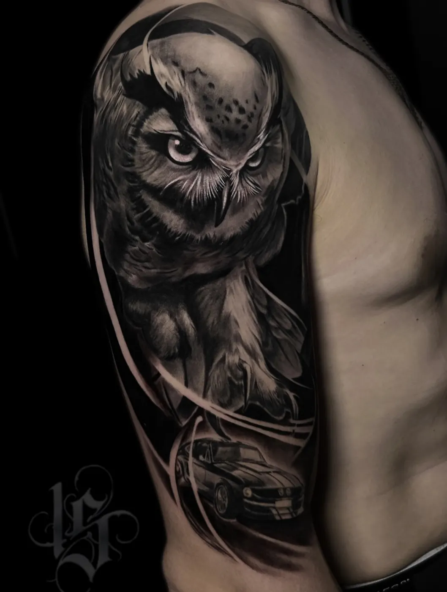

Гид INKSIDE · ощущения
Больно ли делать тату
Короткий ответ: зависит от зоны. Руки и икры терпимо, рёбра и кисти чувствительнее. Делаем паузы, когда нужно. Ниже - подробнее по зонам и о том, как сделать сеанс комфортнее.
Консультация бесплатная. Ежедневно 11:00-23:00 по записи.
На что похожи ощущения
Большинство описывает тату как царапание или жжение, к которому через какое-то время привыкаешь. Контур обычно ощущается острее, заливка и тени - тупее, но дольше. Сильнее всего чувствуются места, где кожа тонкая, рядом кость или много нервных окончаний.
Боль очень индивидуальна: одно и то же место кто-то терпит спокойно, а кому-то нужны паузы. Это нормально, и паузы мы делаем, когда нужно.
Боль по зонам
| Внешняя сторона плеча | терпимо |
| Предплечье (внешняя сторона) | терпимо |
| Икра | терпимо |
| Бедро (внешняя и передняя сторона) | терпимо |
| Верх спины, лопатки | средне |
| Грудь | средне |
| Внутренняя сторона руки, локтевой сгиб | чувствительно |
| Ключица | чувствительно |
| Шея | чувствительно |
| Позвоночник | чувствительно |
| Кисть, пальцы, запястье | чувствительно |
| Стопа, щиколотка, колено | чувствительно |
| Рёбра, бок, живот | сильнее всего |
Это общий ориентир по опыту тату-индустрии, а не обещание: ощущения у всех разные.
Самые терпимые места
Внешняя сторона плеча и предплечья, икры, бедро. Там больше мягких тканей и меньше нервных окончаний, а кость далеко. Поэтому эти зоны чаще всего советуют для первой тату. На руке и ноге ещё и проще работать, поэтому в калькуляторе на главной это базовая цена.
Самые болезненные места
- Рёбра и бок. Тонкая кожа прямо над костью, и рёбра двигаются при дыхании. Тату на рёбрах больно почти всем, поэтому там чаще делают паузы.
- Позвоночник и ключица. Кость близко к коже, вибрация отдаётся сильнее.
- Шея. Тонкая чувствительная кожа, особенно спереди и сбоку.
- Кисть, пальцы, стопа. Много нервных окончаний и мало мягких тканей.
- Внутренняя сторона руки, локтевой сгиб, подмышка, под коленом. Тонкая нежная кожа.
Рёбра, шея и кисть в калькуляторе на главной считаются дороже: работать там дольше и сложнее.
От чего ещё зависит боль
- Сон и еда. Выспаться и поесть перед сеансом - самый простой способ перенести его легче.
- Алкоголь. Без алкоголя накануне: он не обезболивает, а усиливает кровоточивость, и пигмент ложится хуже.
- Длина сеанса. Чем дольше сеанс, тем выше чувствительность к концу. Поэтому крупное делим на сеансы.
- Самочувствие. Простуда, усталость, стресс делают кожу и нервы чувствительнее. Если вы заболели, лучше перенести сеанс.
- Цикл. У многих женщин чувствительность к боли выше в дни перед и во время месячных. Это не запрет, а повод выбрать дату удобнее.
Как подготовиться
Выспаться, поесть перед сеансом, без алкоголя накануне. Одежда, которая открывает зону. Возьмите воду и что-нибудь сладкое, наушники с музыкой или подкастом. Если становится тяжело, просто скажите мастеру: сделаем паузу.
Про обезболивающие кремы: использовать ли их в вашем случае, уточните на бесплатной консультации. Не принимайте перед сеансом таблетки, разжижающие кровь, без согласования с врачом.
Больно ли после сеанса
Первые дни тату ощущается как небольшой ожог: кожа красная, тёплая, может слегка ныть. Потом начинается зуд и шелушение. Как ухаживать, чтобы всё прошло спокойно, - в гиде по уходу за тату.
Работы




Больше работ - на главной и в Instagram @inkside.minsk.
Вопросы
Больно ли делать тату на руке?
На внешней стороне плеча и предплечья обычно терпимо. Внутренняя сторона руки, локтевой сгиб и кисть чувствительнее.
Больно ли делать тату на рёбрах?
Да, рёбра - одна из самых чувствительных зон: тонкая кожа над костью и движение при дыхании. Делаем паузы, когда нужно.
Больно ли делать тату на шее?
Шея - чувствительная зона, особенно спереди и сбоку. Сзади обычно немного легче.
Какое место для тату самое не болезненное?
Обычно внешняя сторона плеча и предплечья, икры и бедро.
Можно ли использовать обезболивающее?
Использовать ли обезболивающий крем, уточните на бесплатной консультации. Таблетки, разжижающие кровь, без согласования с врачом принимать не стоит.
Как сделать сеанс менее болезненным?
Выспаться, поесть перед сеансом, без алкоголя накануне. Крупное делим на сеансы и делаем паузы, когда нужно.
Записаться
Напишите идею в двух словах: мастер честно скажет, подойдёт ли она вам и сколько будет стоить.
- адрес
- Минск, пер. Макаёнка 4, пом. 64 (как нас найти)
- телефон
- +375 (44) 511-19-12
- часы
- ежедневно 11:00-23:00, по предварительной записи